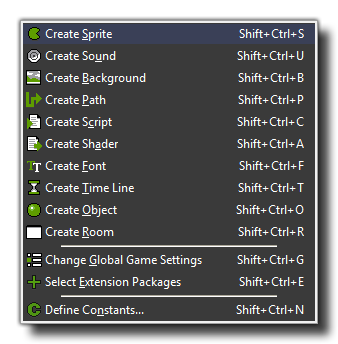

The Resources Menu
Here you can find out all about the various options available to you from the drop down resource menu.

In this menu, you can create a new resource for each of the different types as well as change the global game settings, add Constants, define Triggers and select files
to include in the final game (more information on each of these items can be found further on in the manual). For each of these commands there is also a button on the tool-bar
and a keyboard shortcut.
- Create... : Creates a new resource of the type selected. A form will then open in which you can change the properties of that resource (more on each of the resources in the following sections of the manual)
- Change Global Game Settings : This opens the Global Game Settings window where you can change many things relating to how your game behaves. More information can be found here.
- Select Extension Packages : Here you can select the extension packages that you wish to have GameMaker:Studio use in your current project. More information can be found here. Please note that this option will not be present in the Free Version of GameMaker:Studio
- Define Constants : This will open a further window where you can define your own constants for use within your projects. More information can be found here.
- Included Files : Here you can select the external files that you wish GameMaker:Studio to include in your current project. More information can be found here.
Note that many of these commands can also be given by right-clicking on a resource (or a resource group), and then using the appropriate action from the pop-up menu.
Back : The Drop Down Menus
Next : The Scripts Menu